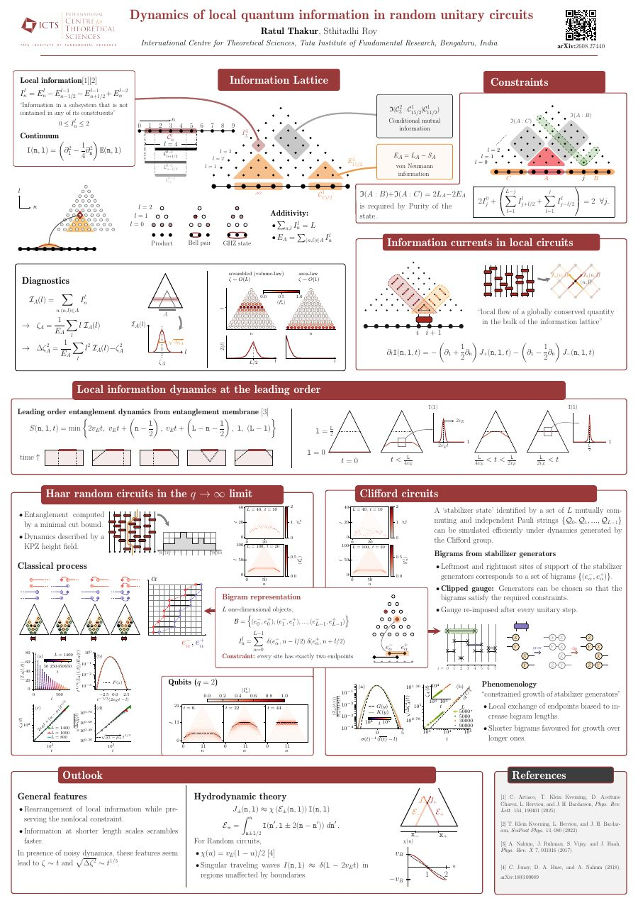

Posters
Posters presented at conferences, schools, and workshops.

Dynamics of local quantum information in random unitary circuits
Presented at Quantum many-body systems out of equilibrium: Relaxation, thermalization, and ergodicity breaking, 2026, held at the Max Planck Institute for the Physics of Complex Systems, Dresden, Germany.